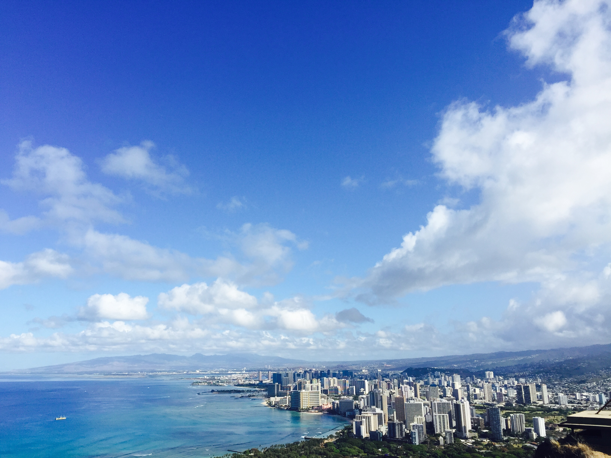
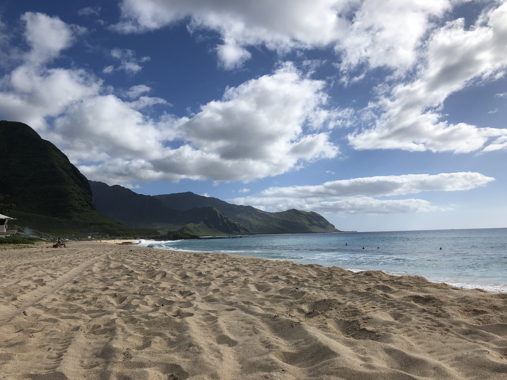
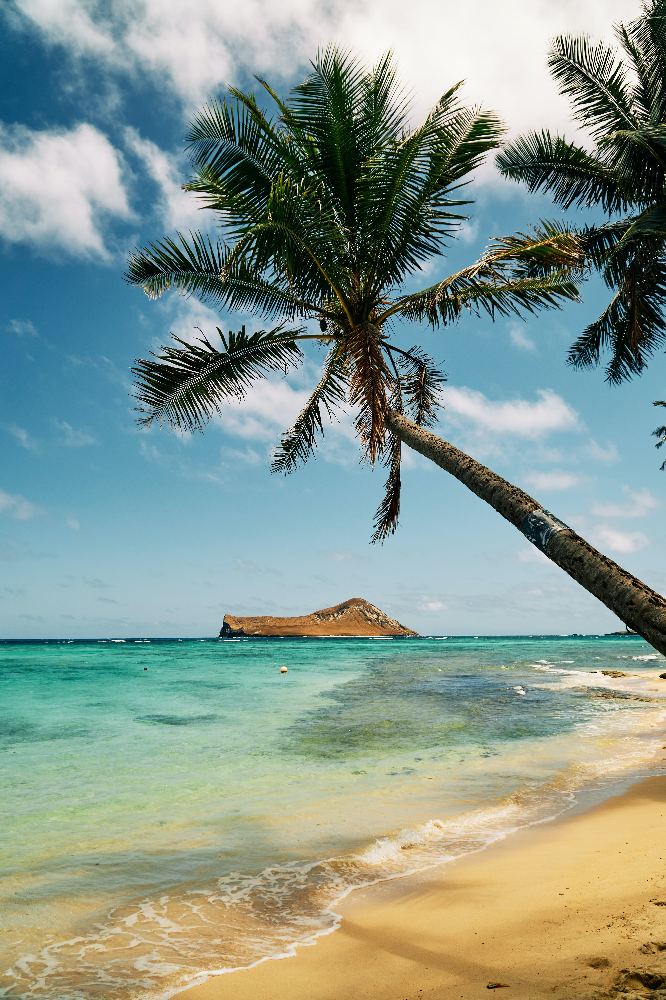

Respecting Hawai'i & Being a Better Tourist

Hundreds of pounds of microplastic are picked out of our sands at every cleanup. Plastic doesn't decompose and ends up on our beautiful shores. As our sea level rises and increased eroison on shorelines becomes more noticeable there is less sand to occupy at the beach and only one place for the microplastic to go. Even though that one takeout container and water bottle doesn't seem like a lot it's contributing to the increase in microplastics, which become dangerous for marine life and make it not enjoyable to go to the beach.
Before visiting take some time to research history and organizations to get involved. If you have time to book your flight and accommodations, you have time to research where you are going. Don't be a disrespectful visitor. Take time out of your trip to give back and learn a bit at the same time. Some volunteering activities you may find fun and can be a meaningful highlight of your trip.

As we are seeing greater effects of climate change, especially frequent and severe weather, with our coastlines are facing dangerous erosion. It is important to help with restoration efforts and learn how we can make lifestyle changes so that our home stays inhabitable for the future. Take a look at our resources page to learn about some small ways to get involved. Check out the links below for some government sites with more information to do your part.
